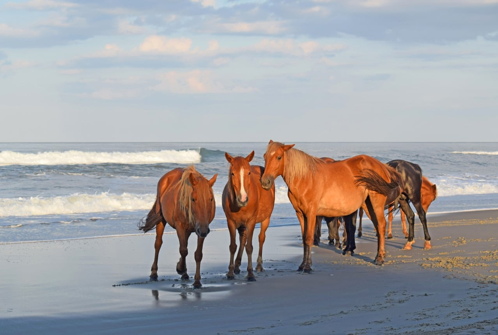
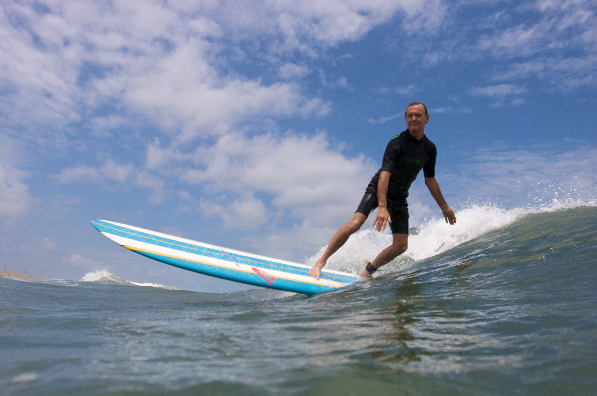
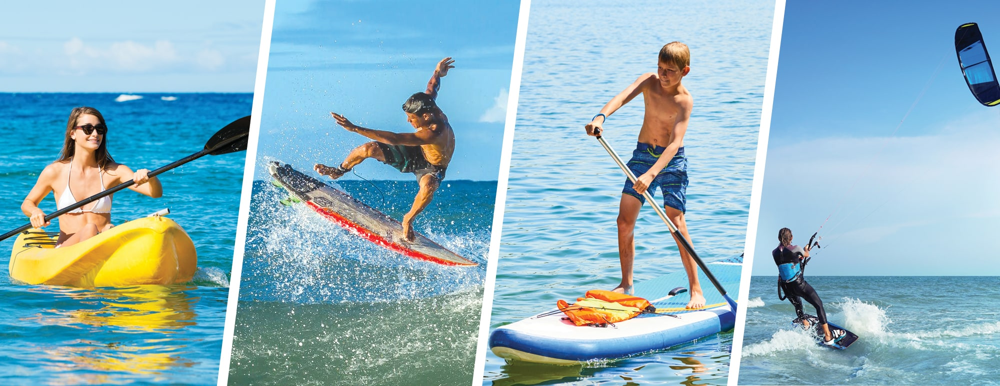

Top Beaches

Explore some of the most beautiful beaches in the Outer Banks, perfect for sunbathing, swimming, and beachcombing.
- Nags Head Beach: One of the most popular spots, Nags Head offers wide sandy shores, great for sunbathing and family-friendly activities. The nearby sand dunes at Jockey's Ridge State Park provide breathtaking views of the ocean.
- Cape Hatteras National Seashore: Known for its iconic lighthouse, this beach is a haven for surfers and nature lovers alike, offering pristine, undeveloped stretches of sand.
- Ocracoke Island Beach: Accessible only by ferry, Ocracoke's beaches offer a more secluded experience with miles of untouched coastline and clear waters.
Surfing

Catch some waves at our famous surfing spots, suitable for all skill levels. Surf schools and rentals are available all around the banks!
Paddleboarding and Kayaking

Rent a paddleboard or kayak to explore the serene waters and coastal ecosystems. Guided tours are also offered.